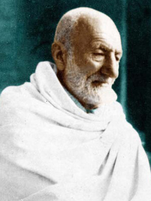
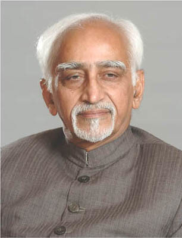
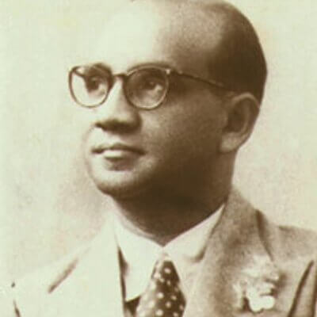
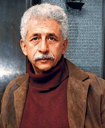
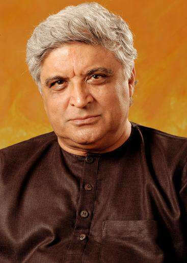
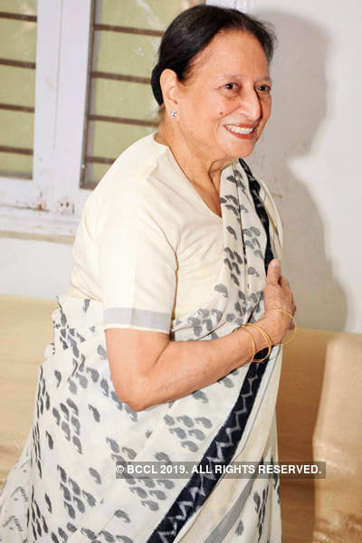
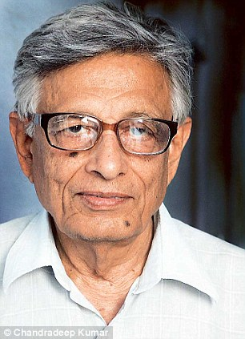
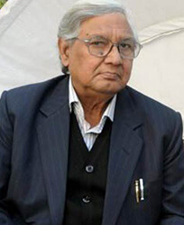
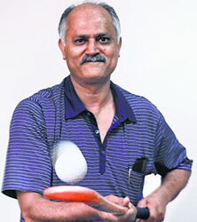
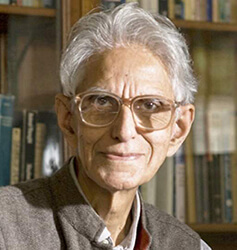

ALUMNI
ALUMNI
Dr. Zakir Hussain
President of India (Bharat Ratan)
President of India

Khan Abdul Ghaffar Khan
(Bharat Ratan)
(Bharat Ratan)

Mohd. Hamid Ansari
Vice President of India
Vice President of India

Mohammad Amin Didi
President of Maldives
President of Maldives

Naseeruddin Shah
Noted Film Personality
Noted Film Personality

Javed Akhtar
Noted Cine Writer
Noted Cine Writer
Mansoor Ali
Prime Minister, Bangladesh
Prime Minister, Bangladesh
Abdullah Sheikh Mohammad
Chief Minister J&K
Chief Minister J&K

Mohsina Kidwai
Former Union Minister
Former Union Minister
Sahab Singh Verma
Chief Minister Of Delhi
Chief Minister Of Delhi

Professor Irfan Habib
Historian
Historian

Shaharyar
( Noted Poet)
( Noted Poet)

Zafar Iqbal
Hockey Player (Olympic Gold Medalist)
Hockey Player (Olympic Gold Medalist)

Dr. Obaid Siddiqui
Padama Vibhushan
Padama Vibhushan
Prof. Tariq Mansoor
Vice Chancellor, AMU
Vice Chancellor, AMU
The students of AMU are spread all over the world, just as Sir Syed prophesied when the foundation stone of MAO College was being laid down. 'The small plant will one day turn into a mighty tree whose branches will spread all over the world'
Read More: List of illustrious Alumni